UE3 — Mycologie médicale : les champignons parasites humains (DFGSM3)
D'après le cours du Pr Sophie Brun (Parasitologie-Mycologie, Hôpital Avicenne — 4-5 juin 2025), parties 1 & 2. Pivots : piège / point critique · diagnostic · traitement · seuil. ID = immunodéprimé · IC = immunocompétent · FF = facteurs favorisants. Figures du cours intégrées.
Règne autonome (les Champignons / Eumycota), à côté des animaux, plantes, protistes, procaryotes (arbre phylogénétique sur séquences).
Nutrition par absorption (≠ photosynthèse des plantes, ≠ ingestion des animaux).
Eucaryotes : noyau à membrane, chromosomes, nucléole, mitochondries.
Hétérotrophes : pas de chlorophylle, dépendants d'une source de carbone.
~200 000 espèces ; la plupart saprophytes du sol ; ~400 seulement pathogènes pour l'Homme.
Paroi & membrane = cibles des antifongiques
Paroi peptidopolyosidique épaisse : mannanes (mannoprotéines), β-glucanes (β-1,3 et β-1,6), chitine → cible des échinocandines (inhibition synthèse glucanes).
Membrane = bicouche phospholipidique riche en ergostérol (≠ cholestérol humain) → cible des azolés (inhibent sa synthèse) et des polyènes (s'y lient → pores).
🔑 La paroi à β-glucanes est aussi à l'origine du β-D-glucane (BDG) sérique, marqueur panfongique du diagnostic indirect.
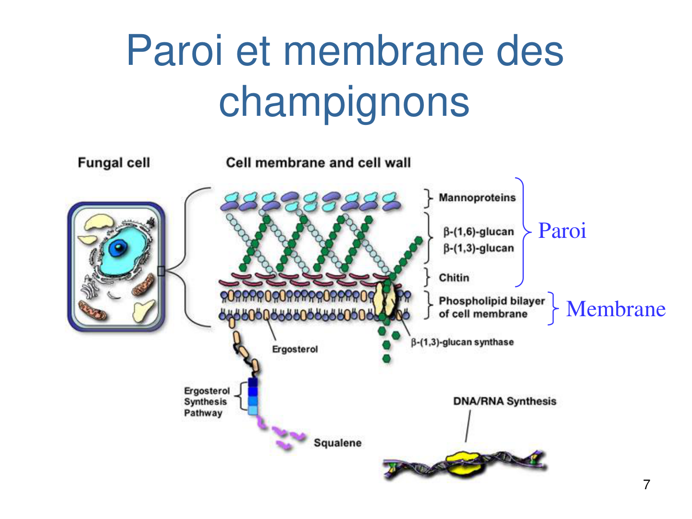
Paroi & membrane fongiques — de l'extérieur vers l'intérieur : mannoprotéines → β-(1,6) et β-(1,3)-glucanes → chitine (paroi), puis bicouche phospholipidique à ergostérol (membrane). Les flèches indiquent les voies ciblées par les antifongiques (synthèse de l'ergostérol, β-1,3-glucane synthase).
2 · Morphologie : trois grands types de thalle
Le thalle (appareil végétatif) définit trois groupes :
Type
Description
Exemples
Levures (levuriformes)
Cellules isolées arrondies/ovalaires (blastospores), 1 noyau, multiplication par bourgeonnement. Parfois pseudo-filaments (C. albicans).
Candida (+++, 80 % des infections fongiques), Cryptococcus, Pneumocystis, Malassezia
Filamenteux (= moisissures)
Filaments = hyphes formant un mycélium, croissance indéfinie terminale, multiplication par spores.
Dimorphisme (Penicillium marneffei) : forme levure à 37 °C (in vivo, parasitaire) vs forme filamenteuse en culture à 25 °C.
3 · Habitat & pouvoir pathogène
Origine endogène vs exogène
Endogène (commensal)
Essentiellement Candida albicans : vit dans les tractus digestif et uro-génital. La peau n'est porteuse de C. albicans que dans des cas pathologiques. Autres Candida (tropicalis, krusei, parapsilosis, glabrata) saprophytes des muqueuses/téguments.
Exogène (la majorité)
Acquisition par voie aérienne (Aspergillus, zygomycètes), transcutanée ou digestive. Retrouvés dans le sol (Histoplasma, Cryptococcus), l'air, des substrats organiques.
Trois profils de pathogénicité
Parasites « vrais » : dermatophytes anthropophiles (M. audouinii, T. schoenleinii…) — toujours pathogènes ; et dimorphiques exotiques (primo-infection quasi obligatoire en zone endémique, souvent inapparente, guérison spontanée sauf inoculum massif ou ID).
Champignons exogènes à potentiel pathogène : facteurs de virulence (Cryptococcus, Histoplasma).
Opportunistes (+++) : Candida, Aspergillus — ne prolifèrent qu'à la faveur de facteurs favorisants de l'hôte.
Facteurs de virulence fongiques
Adhérence aux tissus de l'hôte et aux biomatériaux plastiques → biofilms (résistance aux antifongiques).
Enzymes cytolytiques/cytotoxiques ; modifications phénotypiques (bascule levure ↔ filament) ; modification du pH des phagolysosomes.
Capsule de Cryptococcus neoformans.
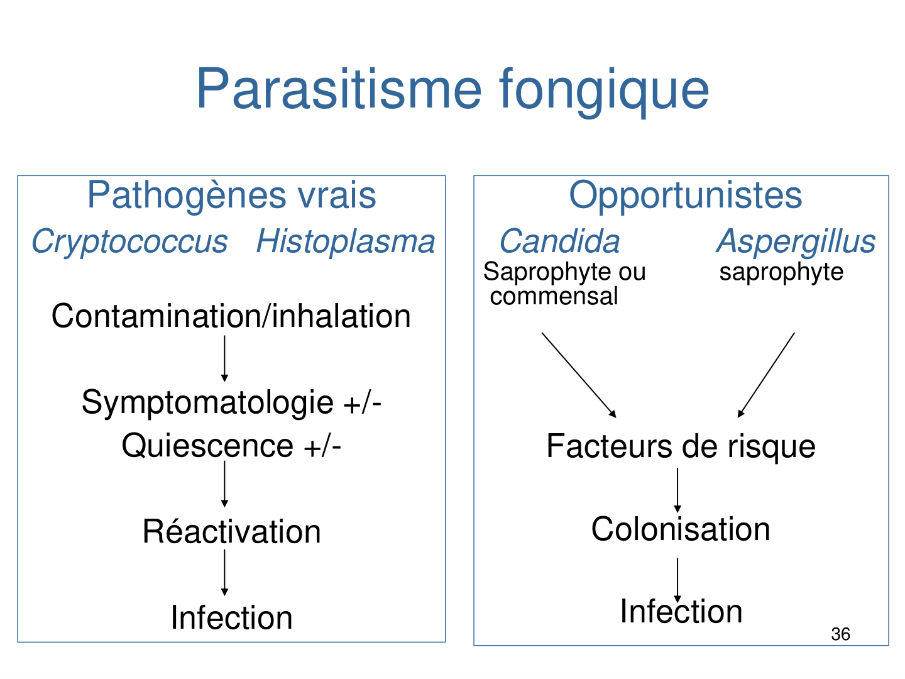
Logique du parasitisme fongique — les pathogènes vrais (Cryptococcus, Histoplasma) donnent une infection après contamination/inhalation ± quiescence ; les opportunistes (Candida commensal, Aspergillus saprophyte) passent de la colonisation à l'infection par réactivation sous l'effet des facteurs de risque.
4 · Facteurs favorisants de l'hôte
Facteurs généraux
Diabète (PNN à capacité d'élimination réduite, se restaure si équilibré)
Hormones (les femmes résistent mieux à de nombreuses mycoses)
Cathéters IV (fongémie), chirurgie digestive (translocation → candidémie), sondes urinaires
Perturbation de la flore
Antibiothérapie large spectre : élimine anaérobies et cocci Gram+ (mêmes récepteurs d'attachement) → colonisation digestive par Candida.
Déficits immunitaires
Macrophages alvéolaires : préviennent la germination des spores d'Aspergillus (efficaces seulement sur spores non germées)
PNN : déficit qualitatif (granulomatose septique) ou quantitatif (neutropénie chimio-induite)
Lymphocytes T : SIDA, greffe, Hodgkin → candidoses, cryptococcose, pneumocystose
5 · Diagnostic mycologique
⚠️ Règle d'or transversale : isoler un champignon ne prouve pas son rôle pathogène (commensaux/saprophytes ubiquistes). L'interprétation est bio-clinique : examen direct +++, nombre de colonies, croissance à 37 °C, pureté & répétition de l'isolement, site stérile ou non, terrain.
Diagnostic direct
Examen direct (état frais / colorations : Giemsa, encre de Chine, Gomori-Grocott…) → mise en évidence du champignon dans le prélèvement = élément majeur.
Culture sur milieu de Sabouraud (+ antibiotiques) → isolement, puis identification (morphologie pour les filamenteux ; MALDI-TOF / spectrométrie de masse pour les levures ; biologie moléculaire).
Antifongigramme (CMI, E-test) si site stérile ou mycose récidivante.
Diagnostic indirect
Anticorps circulants (peu utiles si ID).
Antigènes circulants : Ag capsulaire de Cryptococcus, galactomannane (Aspergillus), Ag mannane (Candida), β-D-glucane (panfongique).
ADN circulant (PCR).
🔬 L'histologie (biopsie) affirme le diagnostic d'infection fongique invasive (champignon dans les tissus).
Prélèvements — points clés
Peau/phanères : à distance de tout traitement antifongique (1 semaine pour la peau, 1 mois pour les ongles / traitement oral) ; grattage en périphérie des lésions (curette de Brocq) ; lampe de Wood pour les teignes ; scotch-test pour Malassezia.
Hémocultures : bonnes pour les levures (Se ~50 % dans la candidose invasive, 1 Hc+ suffit) ; négatives pour Aspergillus (une Hc+ = contamination) et les zygomycètes.
LCR en URGENCE si suspicion de cryptococcose (pronostic vital) ; LBA pour pneumocystose/aspergillose pulmonaire.
Partie 2 · Levuroses
6 · Candidoses
Mycoses humaines les plus fréquentes, dues au genre Candida, cosmopolites, opportunistes (terrain +++).
C. albicans : espèce la plus fréquente, commensal des muqueuses mais toujours pathogène sur la peau et les ongles. Autres espèces en augmentation (C. glabrata, C. krusei) = moindre sensibilité aux antifongiques.
Intertrigos des grands et petits plis (mains >> pieds — inverse des dermatophytes) ; onychomycose avec périonyxis (atteinte proximale, mains >> pieds) ; folliculites (toxico IV, VIH, corticoïdes).
Intertrigos candidosiques — inguinal, sous-mammaire, interdigital, du siège. Fond rouge vernissé, fond du pli atteint, bordure desquamative à collerette avec lésions satellites (≠ bordure active nette des dermatophytes).
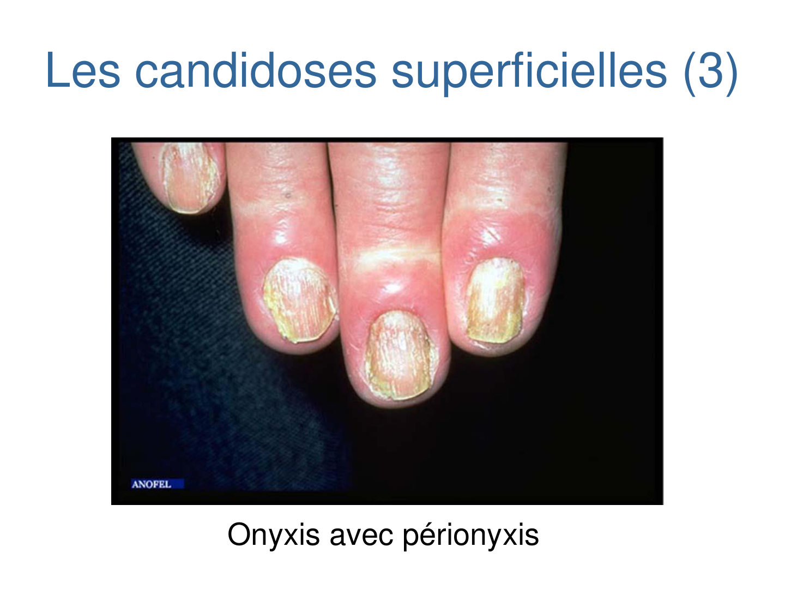
Onyxis avec périonyxis — atteinte proximale + bourrelet péri-unguéal inflammatoire. Le périonyxis oriente vers Candida (les dermatophytes donnent un onyxis distal sans périonyxis).
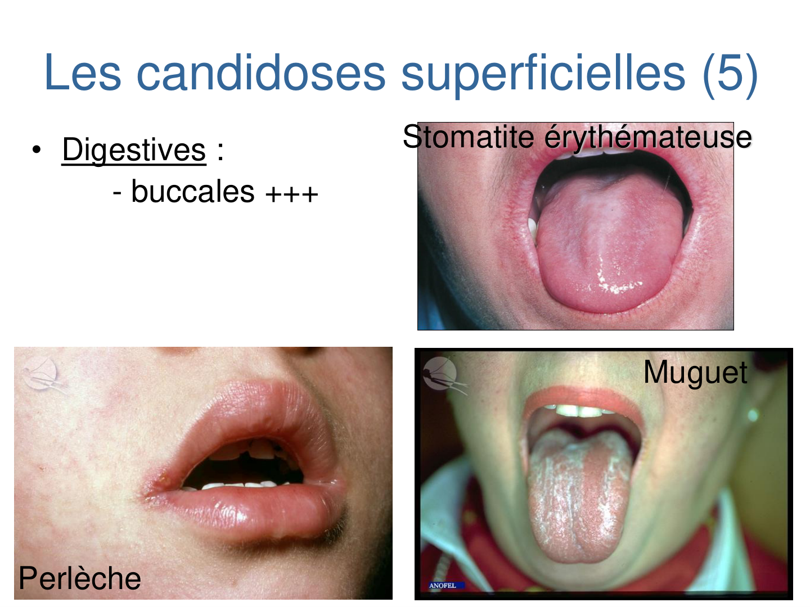
Candidoses buccales — muguet (enduit blanchâtre se détachant), stomatite érythémateuse, perlèche (commissures). L'atteinte œsophagienne est un critère de SIDA.
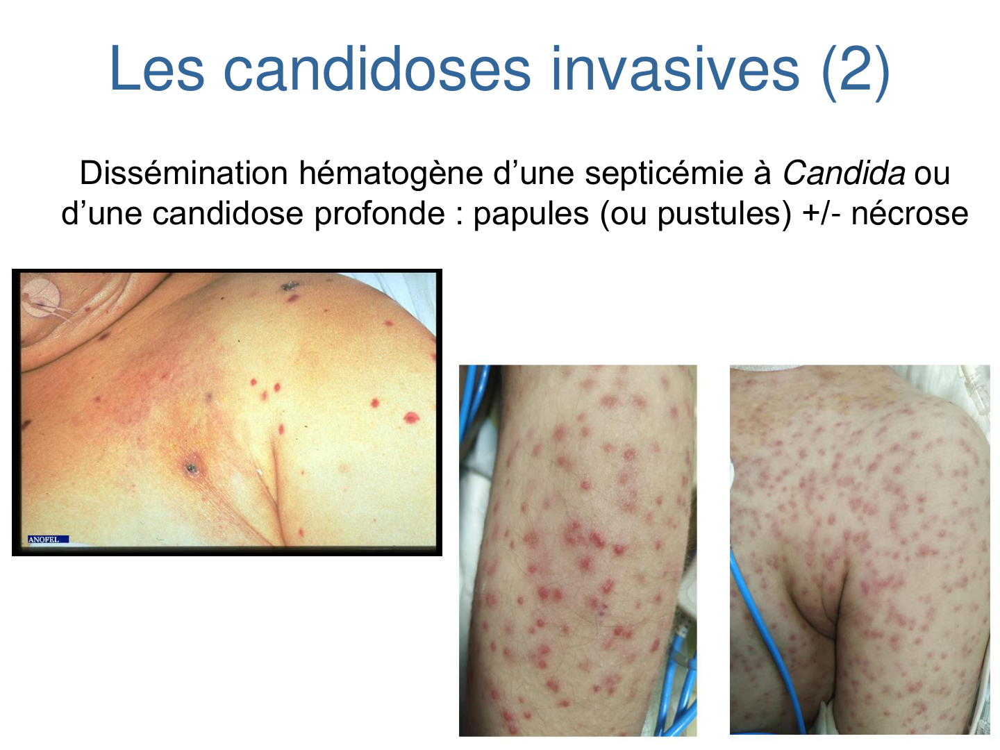
Candidose invasive — dissémination cutanée : papules/pustules ± nécrose par voie hématogène. À évoquer devant toute fièvre résistant aux ATB chez un patient ID/réa.
Y penser devant toute fièvre ne cédant pas sous antibiotiques chez un patient ID / en réanimation.
Diagnostic
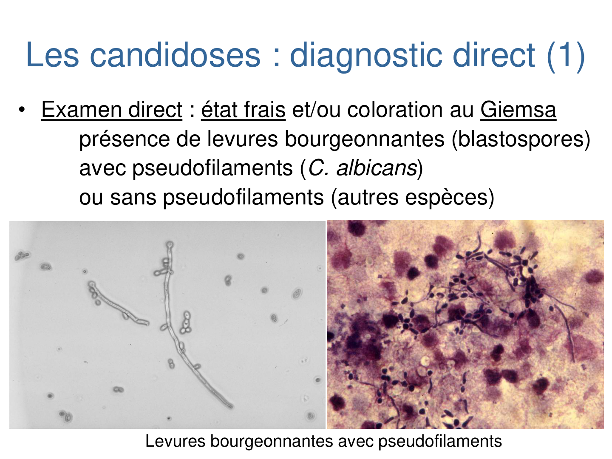
Examen direct (état frais / Giemsa) : levures bourgeonnantes (blastospores)avec pseudofilaments → en faveur de C. albicans ; sans pseudofilaments → autres espèces.
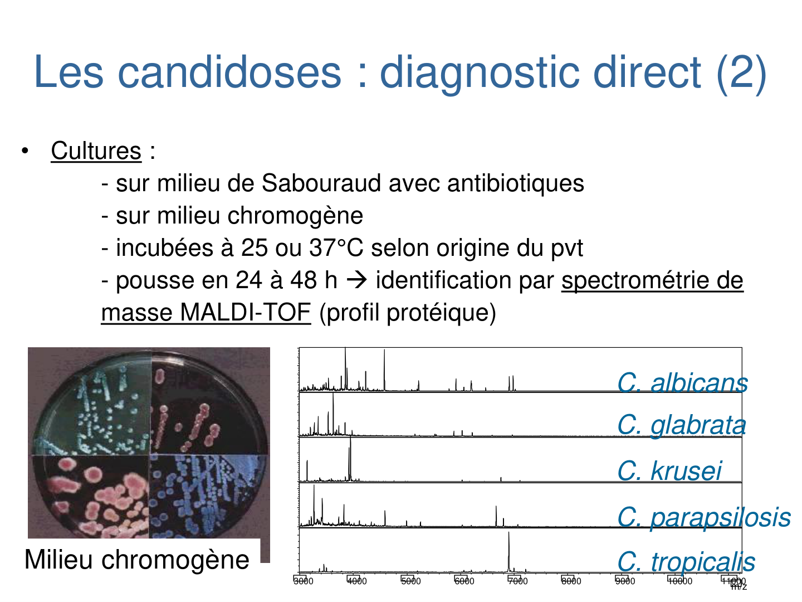
Identification : culture sur Sabouraud + milieu chromogène (couleur selon l'espèce : albicans, glabrata, krusei, tropicalis…) puis MALDI-TOF (profil protéique). Pousse en 24-48 h.
Diagnostic indirect peu performant : Ac (signent une colonisation, inutiles si ID), Ag mannane (peu sensible), β-D-glucane (panfongique, manque de preuve pour la candidémie), PCR en évaluation.
7 · Malassézioses
Levures commensales de la peau (follicule pilo-sébacé), lipophiles et kératinophiles, cosmopolites.
FF : corps gras, peau grasse, transpiration, grossesse.
Infections superficielles fréquentes :
Pityriasis versicolor : macules à limites nettes, squameuses au grattage (signe du copeau), pas de prurit ; cou, tronc, dos (respect paumes/plantes).
Dermite séborrhéique (visage, peau grasse) ; pityriasis capitis (pellicules du cuir chevelu).
Fongémies sur cathéter rarissimes (prématurés, ID avec intra-lipides IV).
Diagnostic : examen direct seul = scotch-test cutané (cellophane) — pas besoin de culture.
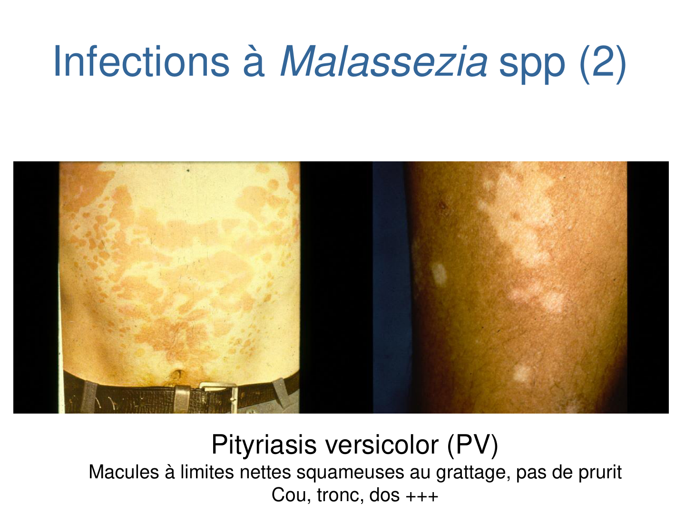
Pityriasis versicolor — macules à limites nettes du cou/tronc/dos, squameuses au grattage, sans prurit. Dues à Malassezia.
8 · Cryptococcoses
Mycose cosmopolite due à une levure (en)capsulée (Cryptococcus spp.), présente dans le sol et les fientes d'oiseaux (jabot de pigeon).
Opportuniste : SIDA +++ (CD4 < 100/mm³), corticoïdes au long cours, greffés.
Tropisme pour le SNC +++ ; contamination aérienne >> cutanée ; dissémination hématogène.
Espèce
Terrain
Particularités
C. neoformans (var. grubii cosmopolite / var. neoformans Europe)
ID +++ (SIDA)
Opportuniste très fréquent ; diffuse à tout l'organisme (méningo-encéphalite, peau, muqueuses, os).
C. gattii
IC >> ID
Eucalyptus (tropical) ; atteinte pulmonaire sévère et isolée.
Épidémiologie & FF
~100 cas/an en France, 50 % VIH (CD4 < 100) / 50 % non-VIH ; 2e infection opportuniste du VIH dans les pays sans accès aux trithérapies ; mortalité précoce 20 %.
Pneumopathie souvent asymptomatique ; méningo-encéphalite insidieuse +++ ; lésions cutanées papuleuses par dissémination (à biopsier).
Prélèvements : LCR +++ en URGENCE, hémocultures, LBA, sérum pour l'Ag capsulaire.
Examen direct à l'encre de Chine (LCR) : capsule en halo clair ; LCR clair, formule mixte/lymphocytaire, ↑ protéinorachie, ↓ glycorachie. Culture sur Sabouraud.
Ag capsulaire +++ (LCR, sérum) — très sensible.
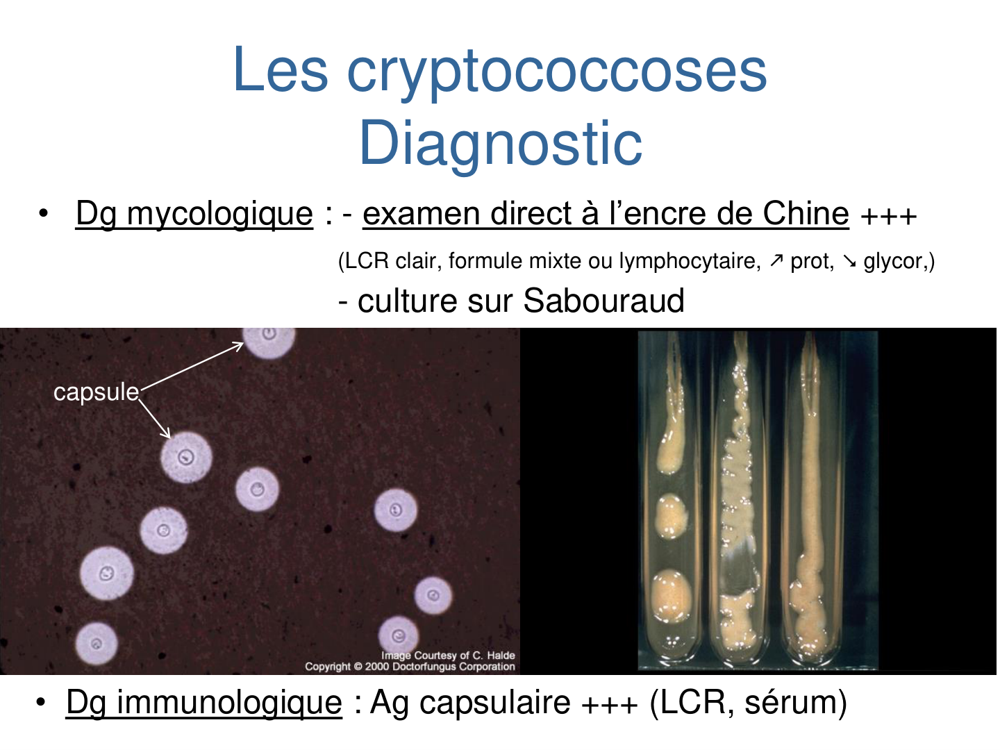
Encre de Chine (LCR) — la capsule apparaît comme un halo clair autour de la levure sur fond noir. Diagnostic direct de référence, Se LCR ~100 %.
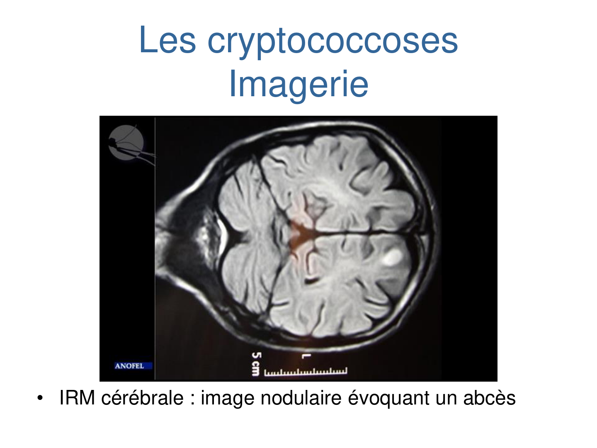
IRM cérébrale — image nodulaire évoquant un abcès (cryptococcome) ; le tropisme neuro-méningé fait toute la gravité.
9 · Pneumocystose
Pneumocystis jirovecii : classé parmi les champignons (levures) depuis l'analyse génomique (proche de Saccharomyces) ; culture impossible +++.
Cosmopolite, ubiquiste ; opportuniste : SIDA = 1re infection opportuniste, greffés (rein +++), corticoïdes au long cours.
Transmission aérienne → surface des alvéoles ; transmission interhumaine possible ; colonisation pulmonaire fréquente (PCR).
Diagnostic direct sur LBA (en urgence) : mise en évidence après colorations — Gomori-Grocott (paroi des kystes), IFI, Giemsa (pas de culture possible).
🔬 Diagnostic indirect +++ : PCR quantitative sur LBA (distingue colonisation vs infection) ; β-D-glucane sérique — titres > 500 pg/ml en faveur, négatif → exclut le diagnostic (VPN ≈ 100 %).
Candidoses invasives, cryptococcoses, pneumocystose, malasséziose (fongémie sur KT)
Partie 3 · Champignons filamenteux
10 · Dermatophytoses
Mycoses superficielles (peau et phanères) fréquentes (prévalence France 10-15 %), dues à des filamenteux kératinophiles et kératinolytiques — toujours pathogènes.
Contamination indirecte >> directe par les spores (sol, objets, animaux).
4 genres : Trichophyton (T. rubrum +++), Microsporum (M. canis, M. audouinii), Epidermophyton (E. floccosum), Nannizzia (N. gypsea).
Réservoir
%
Espèces
Caractère clinique
Anthropophiles
85 %
T. rubrum +++, E. floccosum, M. audouinii
Parasites obligatoires de l'Homme, transmission interhumaine directe/indirecte ; lésions peu inflammatoires.
Zoophiles
15 %
M. canis ++, T. verrucosum, T. benhamiae
Parasites d'animaux, lésions inflammatoires.
Telluriques (géophiles)
< 5 %
N. gypsea
Saprophytes du sol, lésions très inflammatoires.
🔑 Plus le réservoir est « éloigné » de l'Homme (animal > sol), plus la réaction inflammatoire est forte. FF : locaux (chaleur, humidité), immunologiques (diabète, corticoïdes), hygiène/mode de vie (sport, métier, animaux).
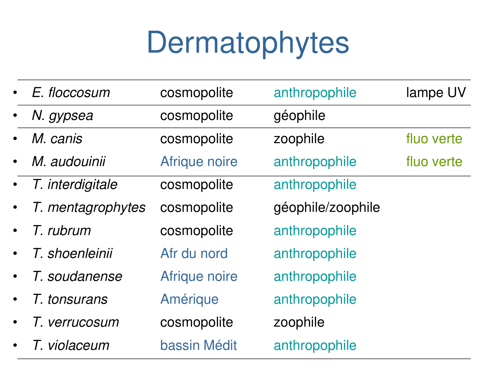
Principaux dermatophytes — répartition géographique, réservoir (anthropophile/zoophile/géophile) et fluorescence sous lampe de Wood : M. canis et M. audouinii = fluo verte (parasitisme ectothrix).
Lésion ronde érythémato-squameuse, bordure active en périphérie (croissance centrifuge, guérison centrale), prurigineuse. Aussi kératodermie palmo-plantaire, folliculite (T. rubrum).
Plis
Grands plis : inguinaux +++, bordure érythémato-squameuse nette ; petits plis : pieds +++ >> mains (« pied d'athlète »), extension possible aux ongles. Inverse de Candida (mains >> pieds).
Teignes tondantes (cuir chevelu de l'enfant)
Microsporiques (grandes plaques 1-3, Wood + verte, ectothrix) vs trichophytiques (petites plaques >10, Wood −, endothrix). Très contagieuses → convoquer l'entourage, pas d'éviction si traitement adéquat.
Teignes suppurées (kérion)
Dermatophytes zoophiles/telluriques ; placard inflammatoire surélevé avec pus aux orifices pilaires ; milieu rural. Souvent aggravé par corticoïdes locaux (diagnostic erroné).
Ongles
Onychomycose distale, sans périonyxis (≠ Candida), pieds +++, T. rubrum.
🌍 Émergence — Trichophyton indotineae (complexe mentagrophytes/interdigitale) : dermatophytoses étendues, récalcitrantes, résistantes à la terbinafine (Jabet, Brun et al., Emerg. Inf. Dis. 2022).
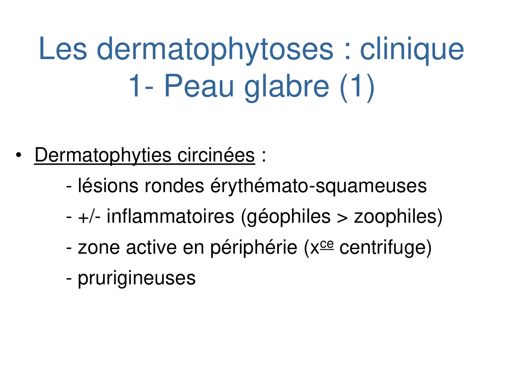
Dermatophytie circinée — lésion arrondie à bordure active périphérique et guérison centrale (croissance centrifuge). Une lésion du visage chez l'enfant impose de rechercher une teigne associée.
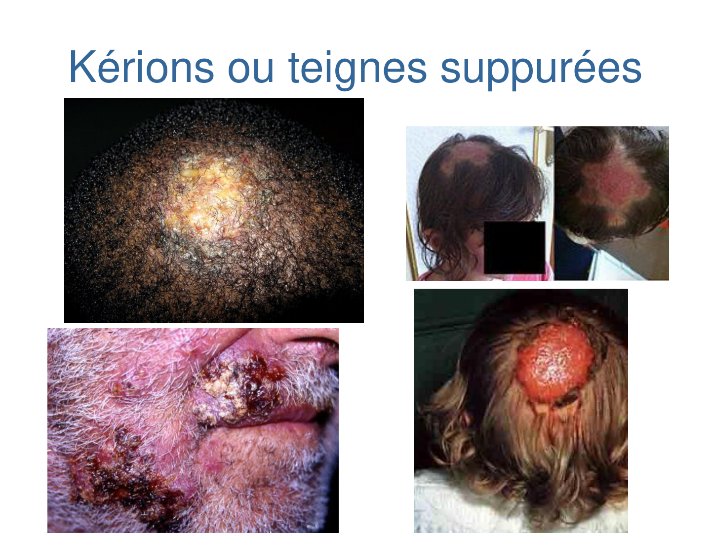
Kérion (teigne suppurée) — placard inflammatoire surélevé, pus aux orifices pilaires, cheveux faciles à prélever. Dermatophyte zoophile/tellurique.
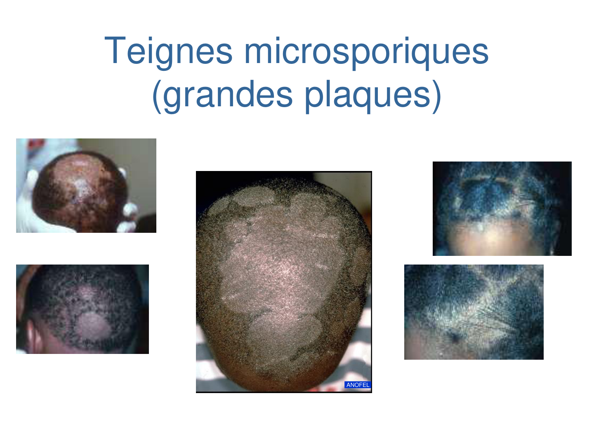
Teigne microsporique — grandes plaques peu nombreuses, squames grises, cheveux cassés courts en gaine ; Wood + verte (ectothrix).
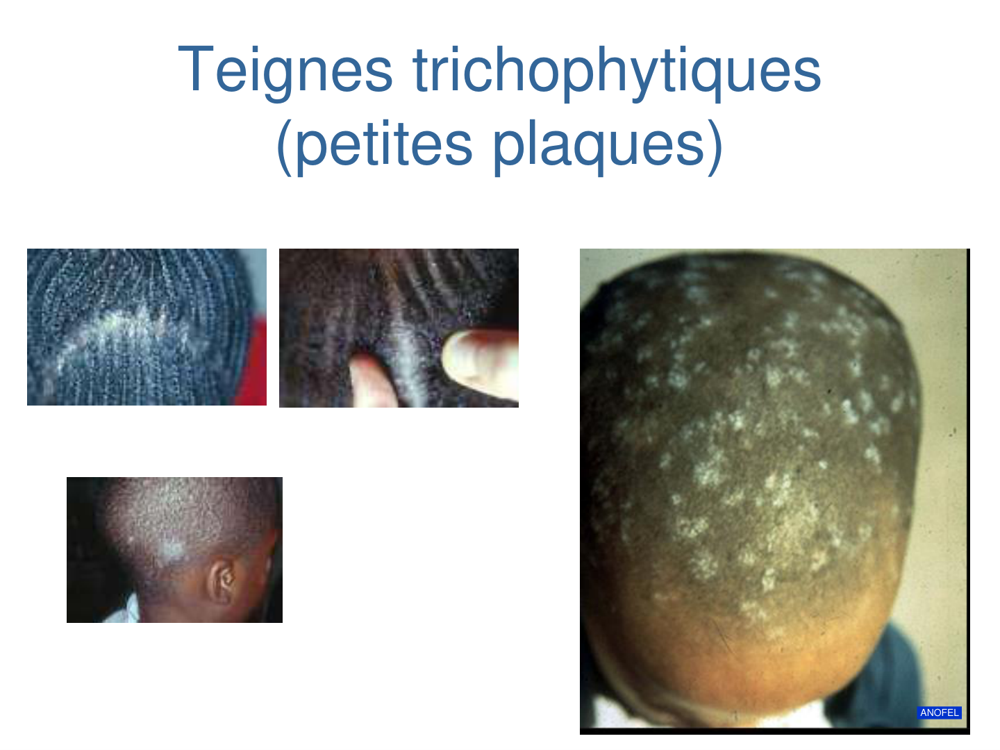
Teigne trichophytique — petites plaques nombreuses (>10), cheveux cassés au ras du cuir chevelu ; Wood − (endothrix).
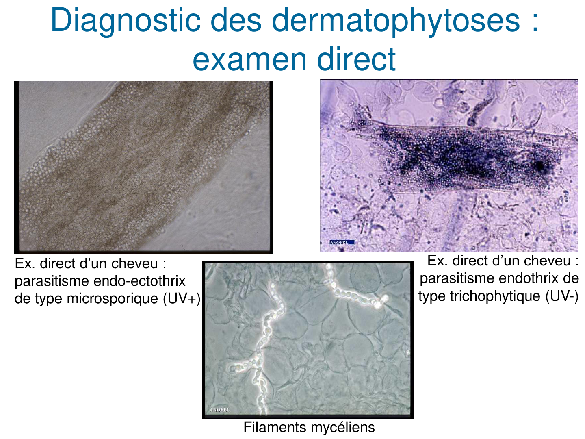
Examen direct du cheveu — parasitisme endothrix (trichophytique, UV −) vs endo-ectothrix (microsporique, UV +). Filaments mycéliens visibles. Culture sur Sabouraud (1 à 3-4 semaines).
📋 Prélèvement indispensable et obligatoire pour les teignes et les onychomycoses (avant tout traitement) ; le prurit est habituel ; l'interrogatoire / l'enquête familiale orientent le diagnostic.
11 · Aspergilloses
Mycoses dues à des moisissures du genre Aspergillus (A. fumigatus > 80 %, A. flavus), ubiquistes (matières organiques, composts, foin), thermotolérantes.
Pathologies opportunistes, souvent nosocomiales. Contamination aérienne +++ par les spores (petites, thermotolérantes, adhérentes) → VAS, sinus, alvéoles. Tropisme vasculaire → dissémination hématogène.
Spectre clinique
Forme
Terrain
Caractéristiques
APC — aspergillose pulmonaire chronique (ex : aspergillome)
Cavité pulmonaire préformée et aérée
Truffe aspergillaire = image en grelot. Diagnostic par sérologie (Ac).
API — aspergillose pulmonaire invasive
ID : neutropénie +++, corticoïdes, hémopathies, greffe de moelle
Signe du halo au scanner ; risque de dissémination, mortalité > 60 %. Diagnostic : galactomannane + PCR (Ag/ADN sérique).
⚠️ Hémocultures inutiles pour Aspergillus (une Hc+ = contamination). Le diagnostic repose sur l'imagerie (TDM : halo, grelot), la mycologie (ED + culture sur LBA/biopsie : filaments mycéliens = pathogène), l'anatomopathologie, et le terrain. Toujours trancher : infection ou simple colonisation ?
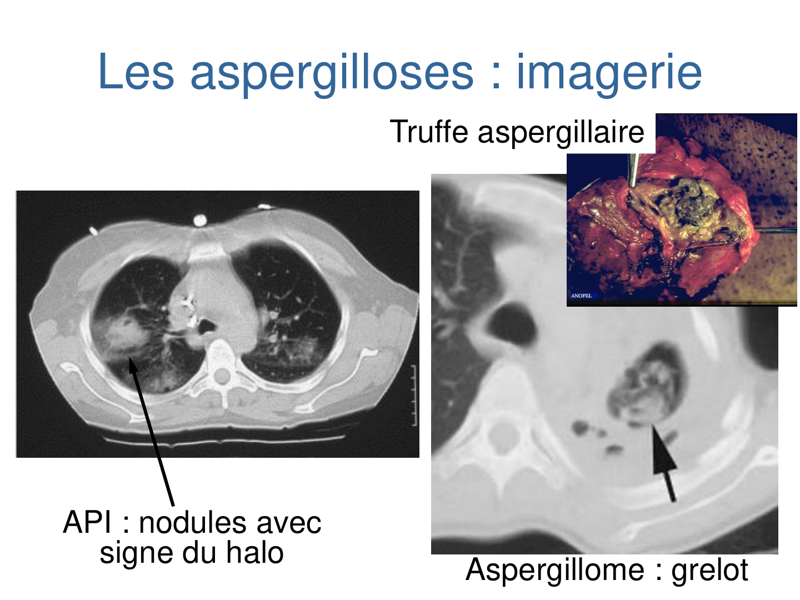
Imagerie — truffe aspergillaire ; API : nodules avec signe du halo ; aspergillome : image en grelot (truffe mobile dans une cavité).
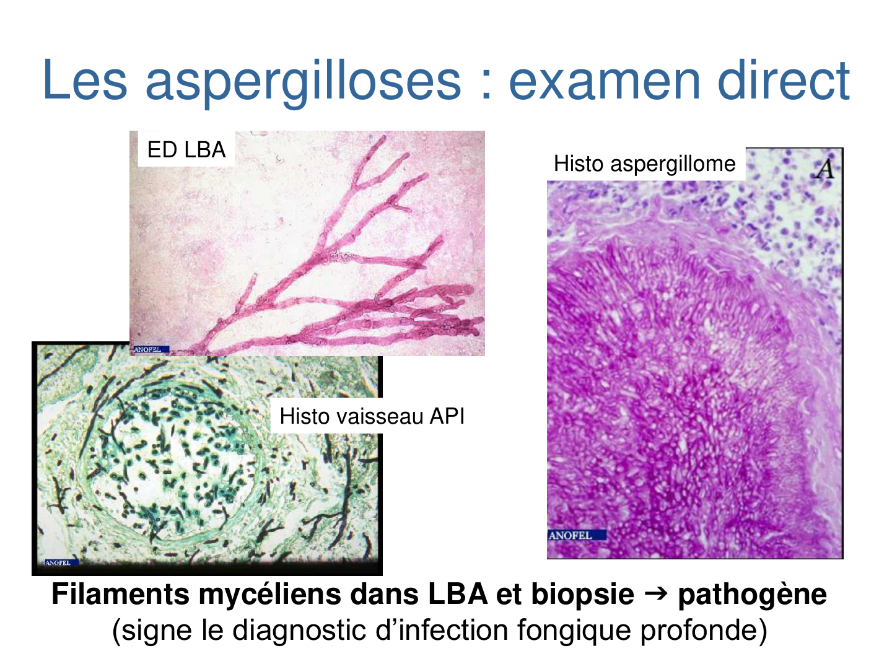
ED & histologie — filaments mycéliens dans le LBA et la biopsie = pathogène (signe l'infection fongique profonde) ; histo de l'aspergillome et de l'invasion vasculaire (API).
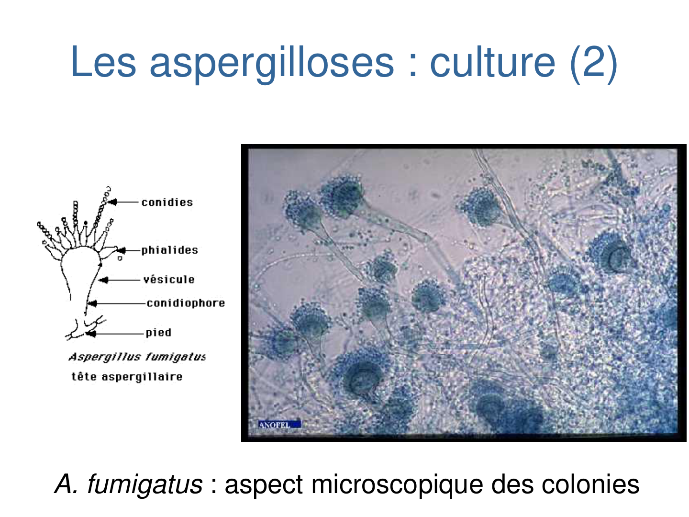
A. fumigatus en culture — aspect microscopique : tête aspergillaire (conidiophore, vésicule, phialides, chaînes de conidies).
🛡️ Prévention (services de greffe de moelle, risque API) : isolement protecteur (chambre à air traité/flux), bionettoyage, surveillance mycologique de l'air (travaux +++), suppression des plantes/épices, antifongique préventif. Port de masque en zone de forte densité de spores (risque AIA : foin moisi).
Polyènes : liaison à l'ergostérol → pores (fuite K⁺/protéines). Allylamines : bloquent la squalène époxydase.
Noyau (acides nucléiques)
Flucytosine (5-FC)
Antimétabolite perturbant la voie des pyrimidines (synthèse acides nucléiques/protéines).
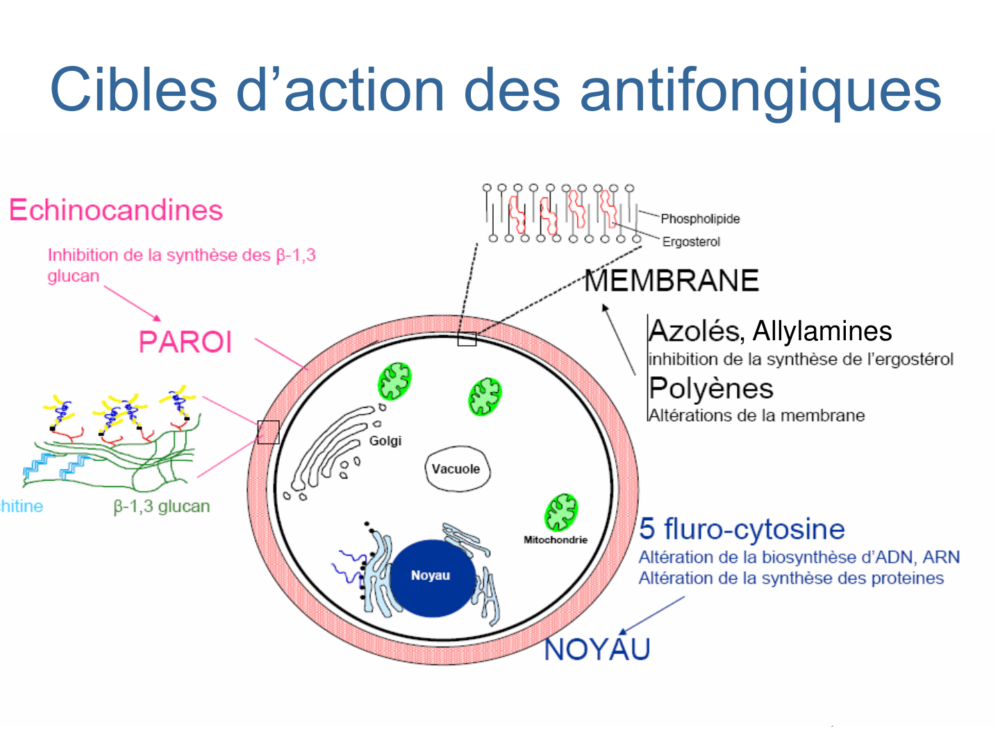
Cibles d'action des antifongiques — paroi (échinocandines), membrane/ergostérol (azolés, polyènes, allylamines), noyau (flucytosine). À relier au schéma de paroi (§1).
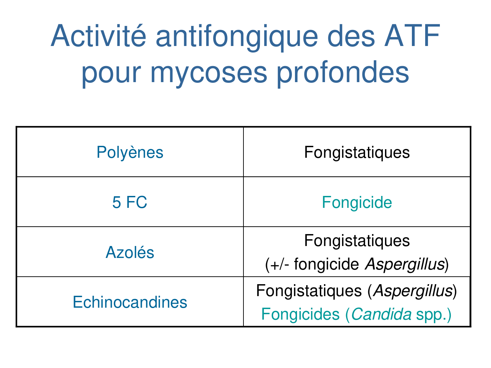
Activité (mycoses profondes) — polyènes & 5-FC fongicides ; azolés fongistatiques (± fongicides sur Aspergillus) ; échinocandines fongicides sur Candida / fongistatiques sur Aspergillus.
Ongles : solutions filmogènes (ciclopirox, amorolfine) 6 mois (mains) à 12 mois (pieds).
Traitement systémique
Indiqué si teigne, onychomycose (matricielle/multiple), lésions étendues.
Teignes : terbinafine (4 sem) ou itraconazole (6 sem) ou griséofulvine (20-25 mg/kg/j au repas gras, 6-8 sem). Terbinafine = R de T. indotineae.
Ongles : terbinafine 6-12 mois.
🦶 Prévention des mycoses superficielles : hygiène des pieds (sécher entre les orteils), sandalettes en piscine/sport, pas de chaussures serrées, vêtements naturels ; teignes anthropophiles → dépister la fratrie, pas d'échange de peigne/casquette ; teignes zoophiles → traiter l'animal.
Mycoses profondes (urgences thérapeutiques)
Infection
Traitement de référence
Candidose profonde (candidémie)
Échinocandine en 1re intention puis réévaluation après identification + antifongigramme (14 j) ; retrait du KT ; FO, écho cœur, hémocultures de contrôle.
Cryptococcose neuro-méningée/disséminée
Amphotéricine B + 5-FC (2 sem) puis fluconazole (8 sem).
Pneumocystose
Triméthoprime-sulfaméthoxazole (cotrimoxazole) curatif 3 sem + prophylaxie Iaire/IIaire si ID.
Aspergillose invasive
Voriconazole ou isavuconazole (avec dosage des azolés), 6-12 sem.
🎯 Le diagnostic des mycoses invasives est difficile car la plupart des pathogènes sont des commensaux/saprophytes : combiner diagnostic direct (ED + culture), indirect (Ag, Ac, ADN) et terrain — toujours rechercher un facteur favorisant, par une discussion clinico-biologique.